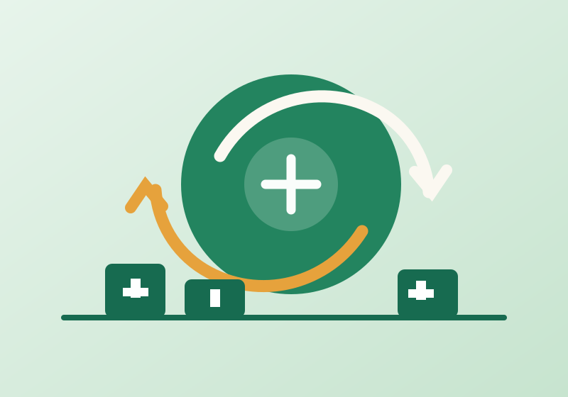
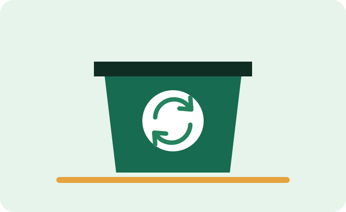
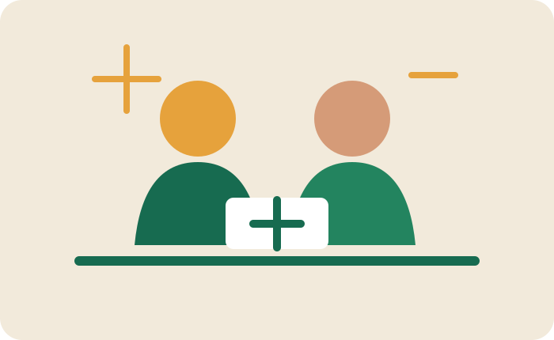
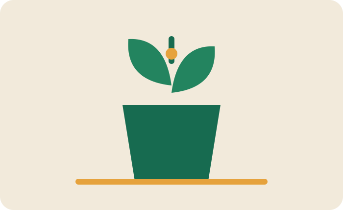

Galeria visual
Ideias ilustradas para um ciclo mais consciente.
Ilustrações originais criadas para este protótipo didático, com descrições alternativas para leitores de tela.




As imagens são ilustrações vetoriais autorais para o trabalho; não representam pessoas, organizações ou locais reais.